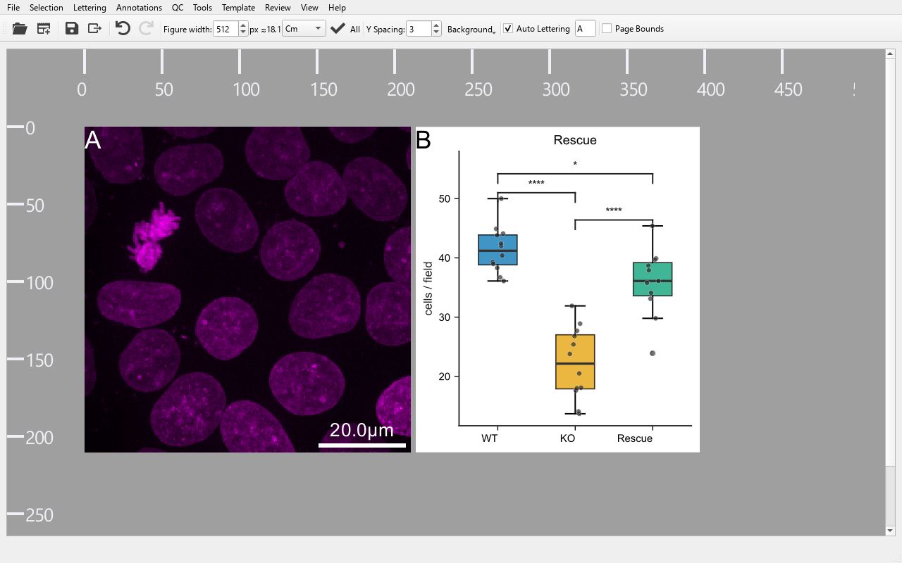
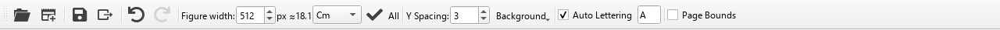
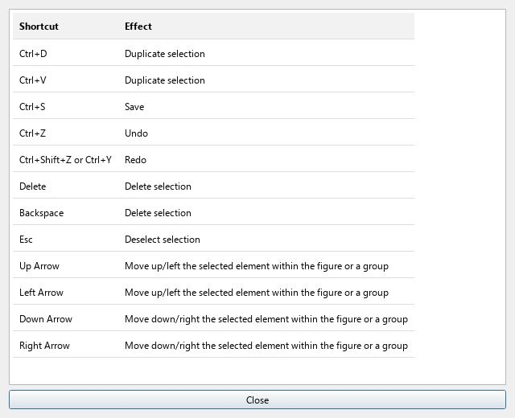

PyFigures
A scientific figure assembly tool — compose, annotate, and export publication-ready figures by dragging and dropping images.
Overview
PyFigures lets you build multi-panel scientific figures without writing code. You drag images onto the canvas, arrange them into rows, columns, or panels, add annotations (scale bars, ROIs, text labels, lettering), and export as SVG, PDF, or raster.
The core workflow is:
Window layout

docs/capture_screenshots.py to generate this image.PYTHONPATH=..:../BAtools_pkg python3 docs/capture_screenshots.py from the project root to auto-generate all screenshots in docs/screenshots/.
The window is divided into four zones:
| Zone | Description |
|---|---|
| Menu bar | File, Selection, Lettering, Annotations, Template, View, Help menus. |
| Toolbar | Quick-access buttons, figure-width spinner, unit selector, spacing, auto-lettering toggle. |
| Canvas | Scrollable drawing area. Drag images here; click to select shapes; right-click for context menus. |
| Status bar | Bottom strip. Shows loading messages and a progress bar during image loading. |
Marks on the selected panels
Each selected panel shows small marks in its centre (the corners stay free for letters, insets and scale bars), on screen only (they are never exported):
- #3: the panel's number in reading order (rows from top to bottom, left to right). In the chat, “#3” or “number 3” names that panel, which helps when the figure has no letters or one letter per row.
- ▦ image, ƒ code or ◇ vector: pixels from a file, a panel made by a script or a plot, or a vector drawing (SVG, PDF).
- ▤ 21z 19t (max): the panel's file is a stack, with 21 Z slices and 19 time points, shown as a maximum projection ((z 5): one slice).
- series 2: the second series of a multi-series file (.lif, .czi…).
- ◐ ch: some channels are hidden or recoloured compared to the file.
- ⌗ crop, ↻ 30°, ⇋ flip / ⇵ flip: cropped, rotated, flipped.
- ◑ contrast: the display range was changed (journals ask about such adjustments).
Warnings, in orange:
- ⚠ 120 dpi: below 300 dpi at the figure's current width; show the panel smaller or use a higher-resolution file.
- ⚠ same as #1: the same image (same file, series, crop, channels, slices) is shown twice.
- ⚠ missing: the image file cannot be found.
Nothing is drawn when nothing is selected. Press Ctrl A to see the marks of every panel.
Toolbar

| Control | Action |
|---|---|
| 🤖 Chat | Opens the chat sidebar: ask a language model to build or edit the figure in plain words. See Chat sidebar & live sharing. The MCP server for other clients is set up in Tools → MCP server…. |
| Open | Open a .pyf file and append its contents to the current canvas. |
| New | Clear the canvas and start a new blank figure. |
| Save | Save the current figure to its .pyf file. Uses Ctrl S. |
| Export raster | Export as JPG, TIFF, or PNG (see Export). |
| Undo / Redo | Step through the edit history. Ctrl Z / Ctrl Shift Z. |
| Width | Set the pixel width of the figure, or of the selected element(s). The label next to it shows the equivalent in the chosen unit. |
| Unit selector | Switch the display unit between mm (the default, as journals), Cm and Inches. |
| ✓ (Apply size) | Apply the width value; the label after it says to what: → all (the whole figure) or → sel. (only what is selected). |
| Gap | Gap (pixels) between panels in the layout. |
| Bg | Colour of the figure background (white, black, transparent or another colour). |
| Letters | When checked, panels are automatically labelled a, b, c… starting from the letter in the adjacent field. Empty that field to remove every letter; type a letter again to bring them back. |
| Page | Toggle a page-size overlay on the canvas. Opens a dialog to set width and height. |
Keyboard shortcuts

| Shortcut | Action |
|---|---|
| Esc | Deselect / clear current selection |
| Delete / Backspace | Delete the selected element |
| ↑ ↓ ← → | Reorder the selected element within its parent group, or nudge its position |
| Ctrl A | Select all elements |
| Ctrl D / Ctrl V | Duplicate the current selection |
| Ctrl S | Save the figure |
| Ctrl Z | Undo |
| Ctrl Shift Z / Ctrl Y | Redo |
Status bar
The status bar at the bottom of the window shows a text message and a compact progress bar during image loading. The message reads Loading N/M image(s)… and the bar fills as each image is decoded in the background. Both are hidden when loading is complete.
Drag & Drop — overview
PyFigures is built around drag-and-drop. You can drop files directly onto the main window from your file manager at any time. Two categories of files are handled:
📄 .pyf files
PyFigures project files. Dropped asynchronously — the window stays responsive while objects load. Multiple .pyf files can be dropped at once.
🖼 Image files
Any raster or vector image supported by the image reader (TIFF, PNG, JPG, SVG, CZI, LIF, …). Multiple images can be dropped together.
.pyf files and images in the same drag operation is not supported. Drop them separately.
Dropping .pyf files
custom_loading_script field trigger a confirmation dialog before loading. Only accept files from sources you trust.
.pyf file while other images are still loading — the queues are merged automatically.
Dropping image files
After the images are loaded a small pop-up context menu appears near the drop location. The available options depend on how many files were dropped and where they landed.
DnD context menu

Every entry shows a small sketch of the result, and the entry under the mouse is drawn larger beside the menu, so you see where the images will go before choosing. Entries that would give the same result are shown once. Dragging panels inside the figure opens the same kind of menu, and Edit Group shows the row / column choices as icons with a live sketch.
➕ Add as single image(s)
Each dropped file becomes an independent element on the canvas — no grouping.
↔ To row
Arranges all dropped images side-by-side in a horizontal row group. (Only shown when more than one image is dropped.)
↕ To column
Stacks the images vertically in a column group. (Only shown when more than one image is dropped.)
▦ To panel
Opens a dialog to configure the number of rows and columns, then arranges the images into a grid. (Only shown when more than one image is dropped.)
↔ / ↕ … (with image below)
Dropped on a panel: makes a row or column with the panel under the mouse and the dropped image(s).
🎞 Montage of frames (time / Z)…
Offered when a single stack or movie is dropped: all its frames as a grid (at most a few columns per row, as many rows as needed), or a chosen range and step.
🎯 Assign to template image
Replaces the template slot under the cursor with the dropped image(s). Only shown when the drop lands on an existing template placeholder. See Dropping onto templates.
✕ Ignore
Cancels the drop operation — nothing is added to the canvas.
Dropping onto template slots
When a figure has been converted to a template, each image slot shows a grey placeholder. Drop one or more images directly onto a placeholder to fill it:
Canvas right-click menu

Right-clicking on the canvas background (no element selected) offers general canvas actions.
Image right-click menu

Right-clicking a selected image offers image-specific operations:
Edit Image
Open the image properties dialog (channels, LUTs, crop, rotation, background). Its LUT dialog previews each LUT and has an Invert box per channel.
Duplicate Selection
Creates a copy of the image.
Add scale bar
Attaches a scale bar annotation. Requires the pixel-to-unit conversion factor to be set.
Add text
Adds a text annotation to the image.
Draw ROI
Opens ROI drawing tools (circle, rectangle, polygon, line, freehand, point).
Channel split (Gray / Magenta-Green)
Splits a multi-channel image into separate panels. Only shown for multi-channel images.
Split by a dimension
Splits a multi-dimensional image along a chosen axis. Only shown when extra dimensions exist.
Convert to template
Turns this image into a placeholder slot.
Group right-click menu

Right-clicking a group (row, column, or panel) gives layout and label operations:
Edit Group
Change orientation (row / column) and spacing.
Add Empty image to the group
Inserts a blank placeholder at the end of the group.
Add text labels above / below
Adds a row of text annotations above or below each image in the row. Row groups only.
Add text label left / right of row
Adds a single label to the left or right of the row.
To row / To column / To panel
Re-arrange the group's layout.
Crop & size ▶
Match the first image: Force same width and height, Force same aspect ratio, Force same crop, rotation and bg (greyed out when already the case); Reset crop and rotation, Reset crop only, Reset rotation only.
Reshape to panel (if possible)
Rearranges a row, a column or several selected panels into a grid.
Combine Horizontally (Row) / Vertically (Col)
With several panels selected (Ctrl+click): puts them together in a new row or column.
Set / Reset LUT(s)
Apply or clear Look-Up Tables for all images in the group. Each list entry shows its colour ramp and each channel shows a preview of its LUT. Invert inverts the channel's LUT, as Fiji's Invert LUT (GRAY ↔ GRAY_INVERTED: dark signal on white; a matplotlib map ↔ its _r twin); the inversion is saved with the figure.
Change font for all non-Letter text
Opens a font dialog and applies the chosen font to every text annotation in the group.
Remove annotations ▶
Strips all annotations, or only the scale bars, texts, ROIs or insets, from every image in the group.
Auto-lettering

When the Letters checkbox in the toolbar is enabled, PyFigures automatically overlays panel labels (a, b, c… or A, B, C…) on each top-level element.
- Set the starting letter in the one-character field next to the checkbox.
- Configure font, size, color, and case via Annotations → Panel letters (A, B, C…).
- Letters are rendered live and update as you add or remove panels.
- Empty the starting-letter field to remove every letter; type a letter again to bring them back.
- Some letters only can be bold, italic or underlined: in the chat, make the letter of A bold;
from the MCP server,
edit_panel_letters(scope="panels", panel_ids=[…], bold=True). - Individual letter text elements are locked — edit them only through the Parameters dialog.
One letter per row, outside the row
Many journals letter a figure by row: a single letter (A, B, C…) in the margin left of each row, not one inside every panel. In Annotations → Panel letters (A, B, C…) choose Letters: One per row, outside on the left, then where the letter sits next to its row: Top of the row (default, level with the top of the row and of its column titles) or Middle of the row.
- The rows are narrowed to make room for the letters: the figure keeps its width, and the letters are never cut — on the canvas and in every export (PNG, TIFF, JPG, SVG, PDF, PDF + LaTeX, editable PowerPoint / Illustrator).
- The letters use the figure's letter font, size and colour (a light letter colour chosen for dark micrographs becomes black on a white page, so it stays visible). Annotations → Text style… with Panel letters changes their font, size, colour, bold and italic.
- The Methods adjustment ledger, the source-data bundle and the figure library name each panel by its row's letter (Panel A (cells.png)); the drag-and-drop preview shows it on the panels.
- They follow the row order: swap or move rows and the letters stay A, B, C… from the top.
- The setting is saved with the figure and undoable. Back to One in each panel puts a letter in a corner of each panel again.
- Recipes:
letter_layout: row(androw_letter_align: center); MCP:set_panel_letter_layout.
Undo / Redo
Every user action that modifies the figure is saved to an undo stack stored as temporary
.xml files on disk. This means the history survives even large figures with
many images.
| Action | Shortcut |
|---|---|
| Undo | Ctrl Z |
| Redo | Ctrl Shift Z or Ctrl Y |
.pyf file — it is lost when you close the application.
Export
All exports are under File → Export As:
| Format | Menu entry | Notes |
|---|---|---|
| SVG | Export As → SVG | Vector format. Ideal for further editing in Inkscape or Illustrator. |
| Export As → PDF | Vector format suitable for submission. | |
| PDF + LaTeX | Export As → PDF + LaTeX… | A PDF without text plus a LaTeX overlay, so labels use your document's fonts and real math. |
| PowerPoint (editable) | Export As → PowerPoint (editable)… | One slide the size of the figure, one group per panel: pictures plus editable text boxes (letters, labels, scale-bar text) and shapes (scale bars, ROIs, arrows, brackets). Text inside data plots comes as outlines. |
| Adobe Illustrator script | Export As → Adobe Illustrator script (.jsx)… | A script plus a <name>_assets image folder. In Illustrator, File → Scripts → Other Script… rebuilds the figure with one group per panel, live text and vector paths. |
| VectorCraft document | Export As → VectorCraft (editable)… | A native .vectorcraft file for VectorCraft, the open-source Illustrator replacement: open it with File → Open. One clipped group per panel, live text, vector paths and the images embedded, in one file. VectorCraft also opens the SVG and PDF exports. |
| DeckCraft slide | Export As → DeckCraft slide (editable)… | A native .deckcraft deck for DeckCraft, the open-source PowerPoint replacement: one slide the size of the figure, one group per panel, editable text and shapes. DeckCraft also opens the PowerPoint export. |
| Raster (PNG / TIF / JPEG) | Export As → PNG / TIF / JPEG | A dialog lets you choose the DPI. TIFF is recommended for publication. |
| Print-ready TIFF | Export As → Print-ready TIFF (CMYK)… | High-DPI CMYK (or RGB) TIFF for print submission. |
| Video | Export As → Video (animate time-stacks)… | Animates the figure's movies and time stacks. See Stacks & movies. |
| Source data bundle | Export As → Source data bundle… | A folder with the rendered figure, each panel's source image or CSV, and provenance — for journals that ask for source data. |
Automation: drafts, recipes, library
File → Draft figure from folder… assembles a first-pass figure from a
folder of images and CSVs. File → Build figure from recipe… builds a
figure from a short YAML or JSON file that lists rows of images (or file patterns), LUTs,
crops, scale bars, letters, drawings, insets, journal size, caption, checks and exports —
rebuild it whenever the data change. The same recipe runs from the command line
(python -m pyfigures.recipe build fig.yaml) and through the MCP server.
Full guide: docs/RECIPES.md; example: docs/recipe_example.yaml.
In a recipe, the layout can be written as a short formula instead of a list
of rows: layout: "(split, plot) / [wt, ko / rescue, ctrl]" — , or
| puts panels side by side, / stacks them, parentheses group (a group
spans the rows or columns it holds), square brackets make an aligned grid, and
a^b shows b as an inset of a. The notation is inspired by
Griphus. A picture (one line of panel names per row, a name repeated over
the cells it spans) works too. See section 4b of docs/RECIPES.md.
File → Search figure library… indexes your past figures so you can find and reuse one by panel, label or caption.
Stacks & movies
Z stacks, time stacks and movies (.mp4, .mov, .avi,
.mkv, …) are added like any image. Insert → Stack views
turns the selected stack into a montage of frames, a channel split, a kymograph along a
line, or orthogonal views (XZ / YZ).
File → Export As → Video… animates every movie and time stack of the
figure. Choose .mp4 for a file that plays everywhere, including QuickTime,
Safari, Keynote and PowerPoint on a Mac (H.264). .webm (VP9) is for web pages.
pip install av) the first time
you add a movie or export a video. The standalone apps already include it (on Apple Silicon
Macs they need macOS 14 or newer). A movie too long for the memory is loaded keeping every
k-th frame.
MCP server
PyFigures ships an MCP server: connected to an MCP client such as Claude, it builds, edits,
checks and exports figures from plain-language requests (installed with PyFigures
and included in the standalone apps). Every menu feature has an equivalent tool.
Setup and tool list: docs/MCP_SERVER.md. The client can work on saved
.pyf files without PyFigures open (Tools → MCP server…), or on the figure
open in a window (see below). Every call made on a saved file is logged beside it:
Tools → MCP call history / undo… lists them and undoes the last changes.
LUTs through the MCP server: set_lut accepts names as people write them
("inverted gray", "reversed viridis"), invert_lut inverts a panel's current
LUTs without naming them ("invert the colours of b"), preview_luts shows colour
ramps to compare before choosing, and add_lut_calibration_bar given a panel
places the colour bar right after it with that panel's LUT ("add the corresponding LUT on
the right of b"). A panel drawn by a plotting script has no channels: its colour map is
changed in its script instead, as the server explains.
Cropping through the MCP server: preview_panel_source (preview_panel
in the chat) shows one panel's whole source image, uncropped, with pixel rulers and the
current crop as a dashed yellow box, its contrast stretched for that preview only. The
model reads the coordinates off the rulers and crops once ("crop g so the nuclei fill the
frame"). Asked to open the image editor for you, the chat opens it on the right tab:
Rotate + Crop for a crop or rotation, Texts, File Infos + Scale, Script…
Chat sidebar & live sharing
The robot at the left end of the toolbar (or Tools → Chat sidebar
(local model)…) docks a chat on the right of the window; View → Open the chat at
start-up keeps it there every time PyFigures starts.
Ask in plain words — "add 10 µm scale bars to every image (0.1 µm per pixel)", "use magenta
and green", "is the figure ready for a Nature double column?" — and a language model makes the
change on the figure open in the window, unsaved changes included. Each change is one
undo step (Ctrl+Z), and nothing is written to disk until you save. A reply's own
Undo button takes back everything that reply changed. Asking the chat to undo
("put it back") only takes back what is left of its last change: after that button, or after
your own Ctrl+Z took it all back, the chat undoes nothing more, and it never undoes past
that change into your own edits or the figure being opened. "I want to edit the ROI in b"
(no value given), "let me do it", "myself", "by hand" open the panel editor for you and
change nothing. While the figure
is shared, a recovery copy is kept after each change in PyFigures' app-data folder
(%LOCALAPPDATA%\PyFigures\assistant\recovery on Windows; it is not your file).
When changes stay unsaved for 10 minutes, a small reminder in the corner says so, with that
folder (any figure, chat or not; "Don't show this again" stops it until PyFigures is
restarted), and the quit prompt names the folder too. The model only calls
PyFigures' documented operations on your images; it never draws or alters pixels itself, and
it checks its own work with a rendered preview and a description of the figure. "How do I…?"
questions are answered with the Help → Show me how… guides.
Choosing a model. The chat needs a model to talk to:
- LM Studio (free; the model runs on your computer and your data stay private): load a model that supports tool use and start LM Studio's server; when no model is set in the chat, PyFigures uses the one LM Studio serves. As a guide, a 9-billion-parameter model gave the expected result for 151 of 153 single requests and a 27-billion-parameter model for all of them; multi-step requests need the larger models.
- The chat's own Model Library, which downloads a model and its runtime (llama-server).
- A cloud API (OpenAI, Anthropic, OpenRouter, Groq, Mistral or any OpenAI-compatible
server) in the chat's connection settings, with your own key. The figure descriptions and
previews the model asks for are then sent to that provider. Choosing
OpenRouter (recommended) fills in its free router (
openrouter/free), which passes each request to a free model that sees the previews and calls tools, quickly and without using your graphics card; free models allow a limited number of requests per day. IteraCompute (Qwen3.8-27B, slow) and NVIDIA NIM are listed too, with free tiers; List models… shows which models your key can use, and the model picker in the chat's message box switches between them without leaving the conversation (a green key: the API key is stored; a red key: add it first with the plug button). In its list an eye marks the models that see the previews and a brain those that think; the line below the message box shows the model's context window next to your Context tokens setting. Add provider… in the connection dialog adds any other OpenAI-compatible service (name, address, model), kept for next time; the dialog also remembers the last model you used with each provider. Groq (Qwen3.8-27B) needs its paid tier. Mistral AI fills in Mistral Large 4 (mistral-large-4, sees the previews), with a paid Mistral key; the same key reaches the Z.ai GLM models Mistral serves (List models… marks the ones that read images).
The chat is the package qtpy-ai-sidecar, installed with PyFigures and included in the
standalone apps. Help → Chat & MCP Tutorial walks through all of this.
Chat in a web page
Experimental, not recommended: a last resort. Use the chat sidebar (Tools → Chat sidebar, with an API key, a local model or LM Studio) whenever you can: it works far better. Use the web page only if really nothing else is possible, and before using it, make sure it respects the terms of service of the chat site and your institution's rules (PyFigures types into the page and, with Automatic, sends messages for you).
Tools → Chat in a web page (experimental, not recommended)… (or --web-chat)
docks an online chat page beside the figure instead of the chat sidebar: no API key, you log in on
the page as in your browser (the login is kept for next time). Choose Mistral Le Chat, ChatGPT,
Claude or Gemini in the address list, or type the address of another chat page (your institute's,
for example) and press Enter; addresses you use are remembered.
- Click Start: give the chat the figure. PyFigures writes into the page's message box how to ask it for operations, the operations it can run (the same as the chat sidebar's) and the figure as it is now. Add your request after it ("make channel 2 yellow in a") and press the page's Send button.
- When the model wants something done, its answer ends with a
PYFIGURES-CALLSblock. The panel finds it and lists the operations: Apply runs them on the figure (one undo step each), Dismiss does not. Look-ups that change nothing (finding an operation, reading the figure) run by themselves unless you untick Run look-ups without asking. - The results go into the message box; press Send so the model sees them and goes on.
Or type your request in the panel's own box and click Send (or press Enter): the first request carries the instructions and the figure by itself, no Start needed. With Automatic ticked, PyFigures then applies every operation the model asks for and sends the results itself, round after round, until the model answers without operations (at most 20 rounds per request; Stop pauses it at once, and Ctrl+Z undoes each change). It also does the Start step by itself: as soon as the chat page shows its message box (once you are signed in), the instructions and the figure are sent, once per conversation. Off by default: automatic sending is scripted use of the site, which some institutions' rules or a site's terms do not allow. A chat in "agent" or "code" mode (Mistral Vibe's code sessions, for example) has tools of its own and tends to use them instead of writing the block; its plain chat mode works better.
Even with Automatic, operations that save, export or name a file on your computer wait for your Apply. Operations run once the model has finished writing its answer. ← and ⟳ go back a page and load it again; New conversation opens the chat page afresh (the next request gives it the instructions and the figure again; a new chat started with the site's own button is noticed too). Forget my login… deletes the cookies and cached pages PyFigures keeps for the chat sites. With Paste figure previews into the chat with the results ticked, a preview the model asks for is pasted into the message box (through the clipboard), so a model that reads pictures sees the figure. Only web addresses (https://…) can be opened.
The page is shown inside PyFigures when Qt WebEngine is installed (pip install
"PyQt6-WebEngine==6.4.*", matching your PyQt6 version; the panel gives the exact command and a
button that copies it), and in the PyFigures Web Chat app.
Without it, and in the other standalone apps, the panel works through the clipboard: choosing a
page in the address list opens the chat in your browser, Start and the results are copied for you to
paste (Ctrl+V), and
Read a copied reply reads an answer you copied. Copy the last preview
puts the last figure preview on the clipboard, for pages that accept pasted images. Sign-in with a
Google account may refuse a browser inside an application; sign in with e-mail, or use the clipboard
mode. The messages, the figure's description and any preview you paste go to the chat's provider,
as with any use of that site; follow your institution's rules on which chat you may use.
Bold words in the chat's answers (for example the choices it offers, such as 3-2-2-2) can be clicked: they go into the message box, ready to send or edit. Under the message box, a warning reminds you that language models make mistakes. With an online provider (OpenRouter, Mistral, OpenAI, Claude…), a second line says that your messages, the figure's description (panels, file names, text) and the figure previews (images) are sent outside your computer, to that provider. It is not shown with a model on your computer (LM Studio, the chat's own local models).
If the chat does something wrong, its export button (top of the sidebar) saves the conversation as a ZIP to attach to a bug report: the messages and tool calls, the figure previews the chat showed and a screenshot of the window. It holds no API key or settings, but it does show your figure, so look at it before sharing.
Letting the model see the figure. The previews the chat asks for are shown to you, and also to the model when it can read images, so it can check its own edits (a duplicated panel, a magnified region in the wrong place). The chat's settings (gear button, Show previews to the model) offer Automatic (the default: on when LM Studio reports a vision model, as it does for Qwen3.5-9B), Always or Never. Only the latest preview is sent, made smaller, so the conversation stays within the context. With a cloud model, these previews are sent to its provider.
Pointing instead of typing coordinates. Click a spot on an image, then ask “magnify the region where I clicked, in an inset”: the chat draws a square region centred on your click (120 pixels of the image by default; ask for another size) and turns it into an inset. A journal you name once (“make it fit a Nature double column”) is remembered, so a later “is it ready for submission?” checks that target; with no journal named or applied, the chat asks which one to check against. If the chat opens the annotation editor, it waits for you: press OK or Cancel in it before the chat can continue.
Tools → Share the open figure with the MCP server does the same for any MCP
client (Claude Desktop, LM Studio's own chat…): it shows the configuration to paste into the
client, which then edits this window's figure live. It runs on this computer only
(127.0.0.1), one window at a time; untick it to stop. A plain window first reopens its figure,
unsaved changes and undo history in a new window that can be shared. From the command line:
python -m pyfigures --share or --chat.
Reporting a bug
When something goes wrong, Help → Debug → Start recording a bug…, then do again what went wrong. Every step is logged — menus and toolbar buttons, right-click and drop menu choices, files dropped, dialogs and their values, double-clicks and drags on the canvas — with the figure's structure and a small screenshot after each step, and any error. Stop recording and describe the bug… asks what went wrong and what you expected (quitting while recording asks too).
A recording is a folder in your own data directory (Open the recordings folder): the
starting figure, copies of its images, the steps and the screenshots. It stays on this
computer. python -m pyfigures.gui.bug_recorder make-test <folder> <out_dir>
turns it into a small regression test; the MCP server can read it too
(list_bug_recordings, read_bug_recording).
Templates
A template is a .pyf file where all image content has been replaced by
grey placeholder slots, while the layout, annotations, scale bars, and LUTs are preserved.
Creating a template: File → Convert figure to template.
Using a template:
- Open or drop the template
.pyf. - Drag your new images from the file manager.
- Drop them onto the grey placeholder slots.
- Choose Assign DND content to template image from the pop-up menu.
template: + fill:, see docs/RECIPES.md).
Consolidation
When you share a .pyf file, it contains only paths to the source
images — the images themselves are not embedded. If the recipient does not have the same
paths, images will appear missing.
File → Save And Consolidate… solves this by:
- Saving the
.pyffile as usual. - Creating a sibling
.files/folder. - Copying every referenced image into that folder.
- Updating the paths inside the
.pyfto point to the local copies.
You can then zip and share the .pyf + .files/ pair as a fully self-contained archive.
Remote images (web links, OME-Zarr on a server, OMERO links) stay links by
default, so the consolidated figure still needs the network (and an OMERO login for private
images). If the figure has any, PyFigures asks whether to download them too (default: no).
With Yes, OMERO and OME-Zarr images are saved as a local OME-Zarr of exactly what the
panel shows (raw pixels at full bit depth when omero-py is installed, channel colours, display
windows, pixel size), other links as the file itself. An image that cannot be downloaded stays a
link and is reported. Recipes: download_remote: true; MCP:
consolidate_figure(..., download_remote=True).
Annotations
Annotations are attached to individual images and include:
Scale bar
Right-click an image → Add scale bar. Requires pixel-to-unit conversion factor. See Scale bars.
Text
Rich-text labels with full font control. Placed above, below, or overlaid on images.
ROI shapes
Circle, Ellipse, Rectangle, Square, Line, Polyline, Polygon, Freehand, Point — drawn directly on images.
Insets
Images embedded inside other images as magnified detail panels. In the image editor, Rect ROI --> Inset magnifies a drawn rectangle; Connect ROI ↔ inset then draws two lines from the rectangle to the inset's corners (the chat: connect_roi_to_inset). An inset made from a rectangle follows it: move or resize the rectangle and the inset shows the new region. The lines stay attached to both when either moves or the inset changes corner.
Connectors
A line that stays attached to two shapes, as connectors do in PowerPoint. In the image editor, select two shapes (ROIs, texts or an inset; Ctrl+click the second) and click Connect two shapes: the line joins their nearest corners or edge middles and follows them when they move. Nothing is connected unless you ask. Recipe: connectors; MCP server: add_connector; the chat: join these two boxes with a line.
Image editor (double-click a panel)
It opens on the Annotations tab, where the drawing tools are; a big image opens whole. Above the image, the same zoom buttons as the figure window: Zoom in / Zoom out (also Ctrl −, Ctrl +, or Ctrl + mouse wheel), Fit (Ctrl 0) shows the whole image and 100 % its actual pixels. Click a line or arrow to select it: squares mark its two ends — drag an end to move only that end, drag anywhere else on the line to move the whole line. Ctrl+Z undoes the last move, drawing, deletion or crop change in the editor (Cancel still discards everything). In the Rotate + Crop tab, drag a side or a corner of the crop rectangle on the image, or drag inside it to move it; the spin boxes follow. The image stays upright while you set an angle: the coloured frame turns instead and shows what will be kept (the view moves so all of the frame stays visible). When the chat opens the editor for you, no drawing tool is on: a click selects, a drag moves; click a shape button to draw. Significance (*) (a significance bracket): drag horizontally over two bars, then type the label.
Bulk removal is available via the Annotations menu or via the group right-click menu (removes only within that group).
Scale bars
A scale bar annotation renders a physical-length bar with a text legend (e.g. 10 µm). To add one:
- Right-click the image.
- Set or confirm the pixel-to-unit conversion factor (usually stored in the image metadata).
- Choose bar width in physical units and placement (bottom-right by default).
- Optional: set the Thickness of the bar (3 px by default), and untick Enable Text for a bar without text.
In the chat, one thing of an existing bar can be asked for on its own: the bar in d is too thick,
no text on the bars, bars in black, move it to the left. The length and the rest are kept.
From a script or the MCP server: set_scale_bar(..., bar_height_px=2), label="" for no text;
set_scale_bar_all without a length restyles the bars that exist.
A scale bar, a text and an inset in the same corner are stacked from the corner inward, in the order of the
panel editor's annotation list (the first one sits in the corner). To change it, double-click the panel and
drag the item in that list; in the chat: put the scale bar bottom most; from the MCP server:
move_annotation_in_corner(..., to="bottom") (or "top", "corner",
"away"); the reply lists that corner from top to bottom.
Color-blind assistant

QC → Show color-blind assistant opens a side-by-side preview of the figure as seen by viewers with different types of color-vision deficiency (deuteranopia, protanopia, tritanopia). Use it to verify that your color choices remain distinguishable for all readers.
UI theme
PyFigures supports Light and Dark color schemes, switchable at any time from View → Theme. The active theme is stored in your user settings and restored automatically on the next launch — no manual configuration needed.
| Theme | Description |
|---|---|
| Light | Default system appearance — white/gray backgrounds, dark text. |
| Dark | Dark-gray backgrounds, light text, near-black canvas area. Easier on the eyes in low-light environments. |